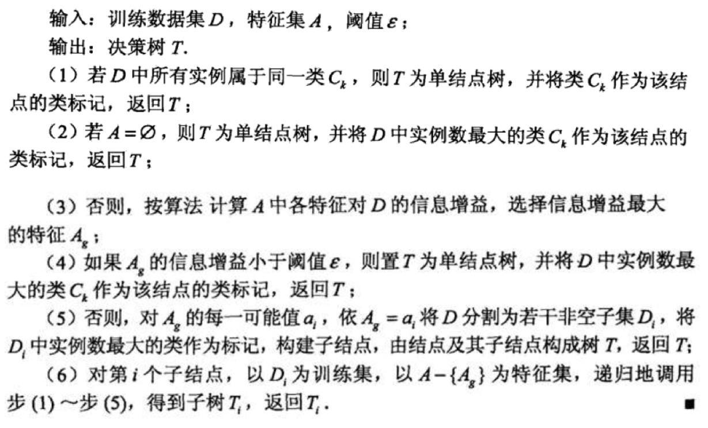
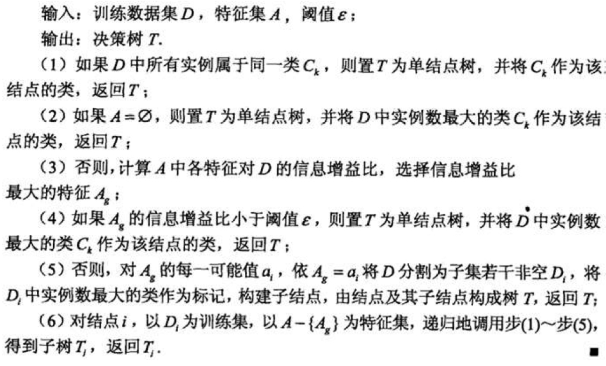
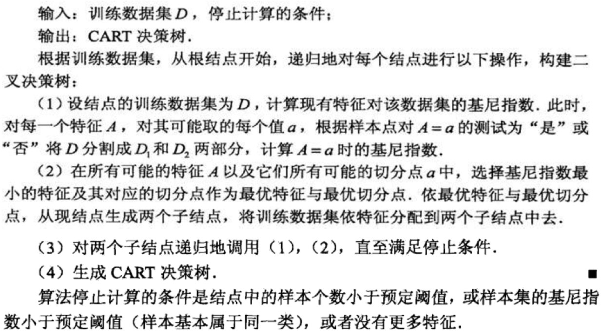

Decision Tree
系列笔记
简介
决策树由结点和有向边组成。结点有两种类型：内部节点和叶结点，内部结点表示一个特征或属性，叶结点表示一个类。棵树仅有一层划分的决策树，亦称“决策树桩”（decision stump）
二叉树的几何解释：向量空间中特征不相关的矩阵划分，经过一系列的决策划分，得到相应类别区域。
决策树是一个递归过程，有三种情形会导致递归返回：
（1）当前结点包含的样本全属于同一类别，无需划分
（2）当前属性集为空，或所有样本在所有属性上的取值相同，无法划分
（3）当前节点包含的样本集合为空，不能划分
决策树的关键问题
- 问题数：
- 离散值情况：以特征或特征的可能离散值作为问题
- 连续值情况：以每个维度的样本特征值作为问题
- 划分（问题）选择
- 非纯度（Impurity Measure）：IM最大时各类别概率相等；IM最小时只有一类
- 非纯度的熵度量
- 非纯度的基尼度量
- 划分选择目标：选择最大减少类别非纯度的问题作为划分点
- 非纯度的减少量：
- 基于非纯度变化量的三个指标：
- 信息增益（熵度量）：越大越好
对于样本集合$D$，类别数为$K$，数据集$D$的经验熵表示为：其中$C_k$是样本集合$D$中属于第$k$类的样本子集，$|C_k|$表示该子集的元素个数，$|D|$表示样本集合的元素个数，计算某个特征$A$对于数据集$D$的经验条件熵$H(D|A)$为：其中$Di$表示$D$中特征$A$取第$i$个值的样本子集，$D{ik}$表示$D_i$中属于第$k$类的样本子集，于是信息增益可以表示为二者的差：存在的问题：$Gain(D,a)$倾向于具有大量值的属性 - 增益率（信息增益与数据集$D$关于问题$a$的熵值之比）：越大越好，特征$A$对于数据集$D$的信息增益比定义为：
- 基尼指数（基尼度量）：越小越好，描述数据的纯度，与信息熵含义类似特征$A$的基尼指数定义为：
- 信息增益（熵度量）：越大越好
- 节点类别设置：叶子结点纯度达到预设阈值后停止划分，并对叶子结点进行类别设置。按概率最大的类别设定：
- 非纯度（Impurity Measure）：IM最大时各类别概率相等；IM最小时只有一类
- 决策树生成
从顶向下（不断增加一个节点）- 准则：所有划分中选择一个使$\Delta I$(非纯度减少量)最大的划分为节点，加入决策树
- 贪婪学习：根据划分准则，在问题集上进行划分，直到Impurity不能再改善或达到较小的改善
- 停止规则：设定阈值
- 剪枝处理（防止过拟合）
- 预剪枝（prepruning）：在决策树生成过程中，对每个结点在划分前先进行估计，若当前结点的划分不能带来决策树泛化性能提升，则停止划分并将当前结点标记为叶结点
- 后剪枝（postpruning）：先从训练集生成一颗完整的决策树，然后自底向上对非叶结点进行考察，若将该结点对应的子树替换为叶结点能带来决策树泛化性能提升，则将该子树替换为叶结点。后剪枝决策树的欠拟合风险很小，训练时间开销比未剪枝决策树和预剪枝决策树都要大得多
经典决策树模型
ID3
- 属性特征作为结点问题，划分选择实际是特征选择的过程
- 划分选择依据：最大化信息增益
- ID3相当于用极大似然法进行概率模型的选择
- 算法流程：
 ID3决策树
C4.5
- 属性特征作为结点问题，划分选择实际是特征选择的过程
- 划分选择依据：最大化信息增益率
- 算法流程：
 C4.5决策树
对ID3的改进：
- 用信息增益率选择属性，克服了信息增益选择属性时偏向选择取值多的属性的不足
- 在树构造的过程中进行剪枝
- 能完成对连续属性的离散化处理
- 能够对不完整数据进行处理
CART
- 属性特征离散值作为节点问题，本质是二叉树
- 划分选择依据：最小化基尼指数
- 预测结果为概率分布，即在输入给定的条件下输出条件概率分布
- ID3、C4.5只能分类，CART既能分类也能回归，回归时采用均方误差做评价；ID3、C4.5特征只使用一次，CART的特征可重复利用
- 算法流程
 CART决策树
决策树计算实例
分别利用三种决策树计算最有划分特征
ID3（最大化信息增益）
同理：
$g(D,长相)=0.42$
$g(D,工资)=0.42$
$g(D,写代码)=0.971$
写代码为最优划分特征C4.5（最大化信息增益率）
同理：
$g_R(D,长相)=0.306$
$g_R(D,工资)=0.306$
$g_R(D,写代码)=1$
写代码为最优划分特征CART（最小基尼指数）
写代码为最优划分特征
代码实现
sklearn默认使用的是CART决策树，既可以分类也可以回归1
2
3
4
5
6
7
8
9
10
11
12
13
14
15
16
17
18
19
20
21
22
23
24
25
26
27
28
29
30
31
32# Import the necessary modules and libraries
import numpy as np
from sklearn.tree import DecisionTreeRegressor
import matplotlib.pyplot as plt
# Create a random dataset
rng = np.random.RandomState(1)
X = np.sort(5 * rng.rand(80, 1), axis=0)
y = np.sin(X).ravel()
y[::5] += 3 * (0.5 - rng.rand(16))
# Fit regression model
regr_1 = DecisionTreeRegressor(max_depth=2)
regr_2 = DecisionTreeRegressor(max_depth=5)
regr_1.fit(X, y)
regr_2.fit(X, y)
# Predict
X_test = np.arange(0.0, 5.0, 0.01)[:, np.newaxis]
y_1 = regr_1.predict(X_test)
y_2 = regr_2.predict(X_test)
# Plot the results
plt.figure()
plt.scatter(X, y, s=20, edgecolor="black", c="darkorange", label="data")
plt.plot(X_test, y_1, color="cornflowerblue", label="max_depth=2", linewidth=2)
plt.plot(X_test, y_2, color="yellowgreen", label="max_depth=5", linewidth=2)
plt.xlabel("data")
plt.ylabel("target")
plt.title("Decision Tree Regression")
plt.legend()
plt.show()
运行结果：
参考资料
- 官方文档sklearn-decision-trees
- 机器学习，周志华，清华大学，2016.
- 统计学习方法，李航，清华大学，2012.